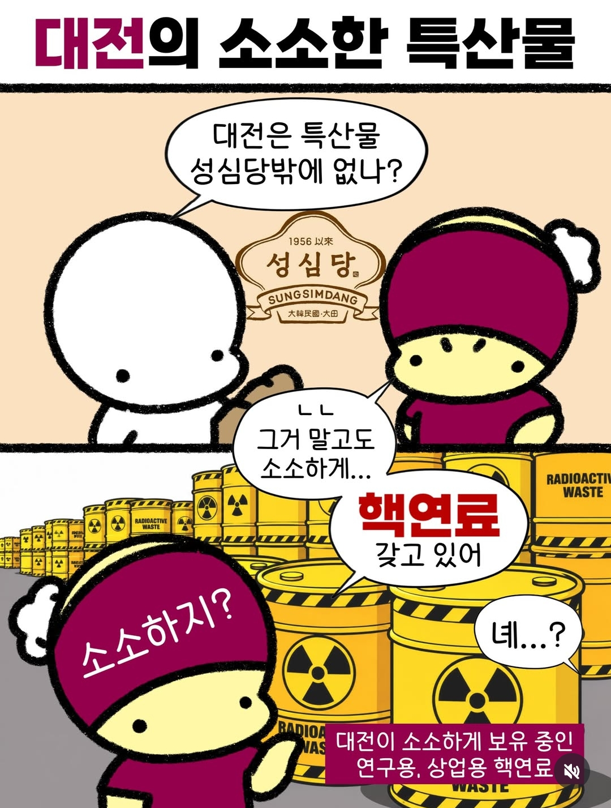

대전의 소소한 특산물.jpg
댓글
핵연료가 좋더라~
??? : 안~터져요
진짜 안터진다는거임
친구는 오랜 친구 죽마고우..
찾아보니 담합했었네 쉬볼
2015년 5월 15일. 가격담합으로 공정거래위원회로부터 과징금을 부과받았다.
화끈하겠네
유성 연구단지 쪽에서 전에 한번 유출됬네마네 하던거같던데
관평동인가 근처에 원자력연구소인지 머시기 터널로 둘어가는곳 거기에 있나
맞을걸 거기 소형원자로있어서
연료 정도나 다루는줄 알았는디 몰랐음
나 무서웡
놀랍게도 바로 앞에 아파트 초대단지들 있음ㅋㅋ
안전하다고는 하지만 소형 원자로도 있음 ㄹㅇ
원자로 까진 생각도 못했네
연구용이라 꽤 작음
하나로 원자로 검색하면 잘 나오더라ㅋㅋ
업무상 자주 갔는데 발전도 안하는 귀요미 원자로임
그렇게 말하니까 응애원자로같아서 진짜 기얍네
충청도 화강암엔 우라늄 좀 함류되어있다고 하던데
좀 많이 있어 ㅋㅋㅋ
옛날엔 대전, 옥천에 우라늄 광산 개발한다고 했다가 난리나기도 했었지
결국 품질이 낮아서 채산성 떨어진다 보고 다 취소됫지만
ㅇㅇ
그래서 지하수 퍼서 수돗물로 쓰는 동네 중에
가끔 기준치 이상으로 검출되는 경우 종종 있음
이제 그만 방사능
원자력연구원 - 연구용원자로 있음
한전원자력연료 - 우라늄 가공해서 연료봉 만듦
연료라면서 웨이스트를 쌓아두시면 어뜨케요!! 으악
두개콜라보가자
대전은 빵도 핵심 전략 물자고 연구소도 핵심 전략 물자네 ㅋㅋ
근데 저 캐릭터는 인스타 보니까 각 지역마다 계정있고 온갖곳에 쓰이던데 무슨 템플릿 같은건가
괜히 평화로운곳이 아니구만
대전광역시 유성구의 로고는 원자핵 속에 피어오르는 아지랑이 모양이다.
설마하니 유성온천이 우라늄으로 끓인 물인가 라고 생각하고 있다면 네 생각이 맞다.
연구용 맞지? ㅎㅎ;
둘다 칼로리폭탄인건 같네ㄷㄷ